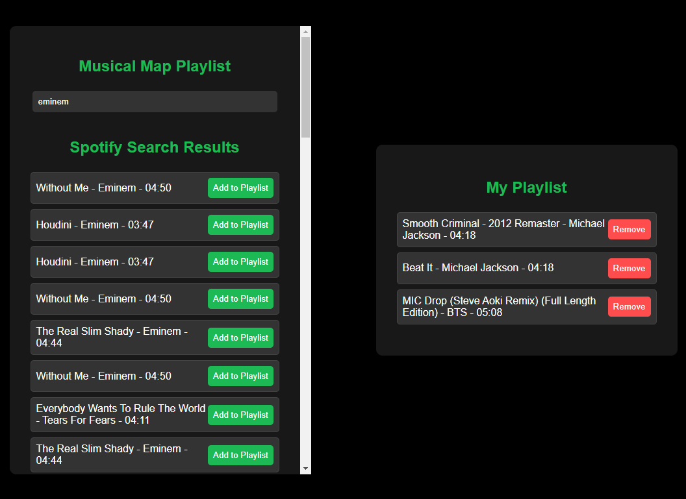
Melody Map Spring MVC API Project
Application developed as a part of a group that allows you to login/create an account
and use Spotify API to utilise CRUD operations. Technologies that were utilized were Spring
framework, RESTful API, Spring Security, JUnit 5, HTML 5, CSS 3, JavaScript, SQL, MySQL
Workbench.

Inventory Management System with Spring Boot JPL
Inventory Management System application that allows the user to add a store, products
related to it, and create a supplier that can be used by all stores. Supports CRUD operations on the
data. The project utilizes Java, Spring (Dependency Injection), Spring MVC, Spring Boot, Jakarta
Persistence Layer (JPL), SQL, MySQL workbench and Maven.

Spring Data JPA School App
Web application that tracks teachers, courses, and students at a school. Can be tested
with Postman performing CRUD operations. Technologies used are Java, Spring
Boot, Spring Data JPA, Postman, SQL, MySQL workbench and Maven.

Flooring Mastery Spring MVC Project
Console application that reads and writes flooring orders for Wiley Edge. The user
can perform CRUD operations on data in txt files. It utilizes Java, Spring MVC, OOP and
unit testing (JUnit 5 and Mockito).
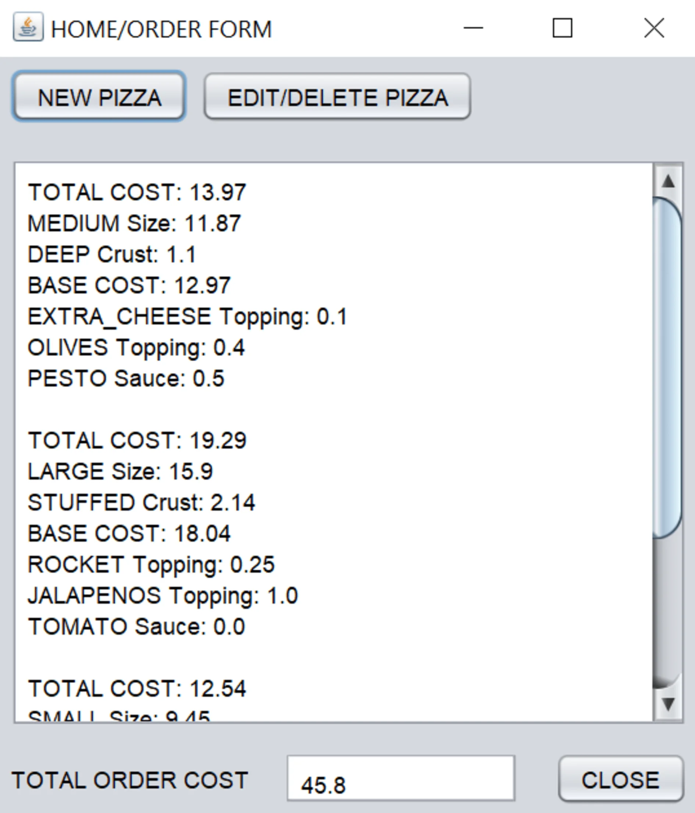
Pizza Ordering System
Designed and developed a Pizza Ordering System containing a "Home/order" and "New
pizza" form. Used the beansbinding library to implement the user interface and Netbeans 12.6 IDE
with Java version 11.
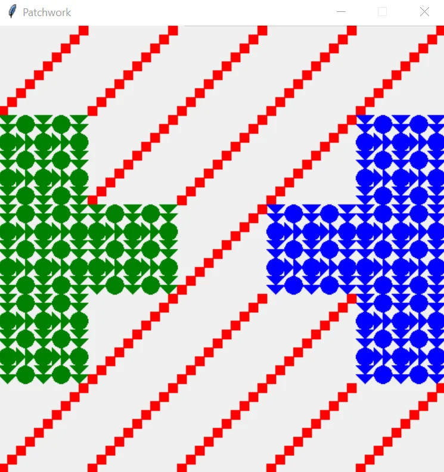
Patchwork Sample
A program written with Python 3.10.2 displaying samples made up of patches of two
different designs and three colours, created using Python 3.10.2 and Pyzo IDE. Patchworks are
square and can be of three different sizes: 5 × 5, 7 × 7 and 9 × 9.
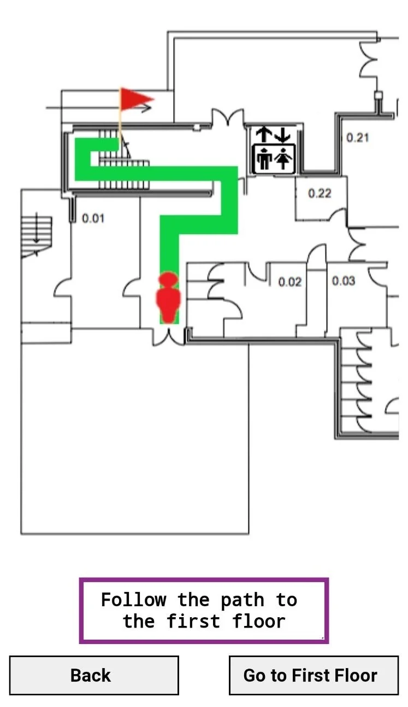
Indoor navigation application
Developed by researching literature, gathering requirements with a questionnaire
and grouping them with the MoSCoW method. Described the system architecture, use case diagrams,
and the project implementation in my bachelor's degree dissertation.
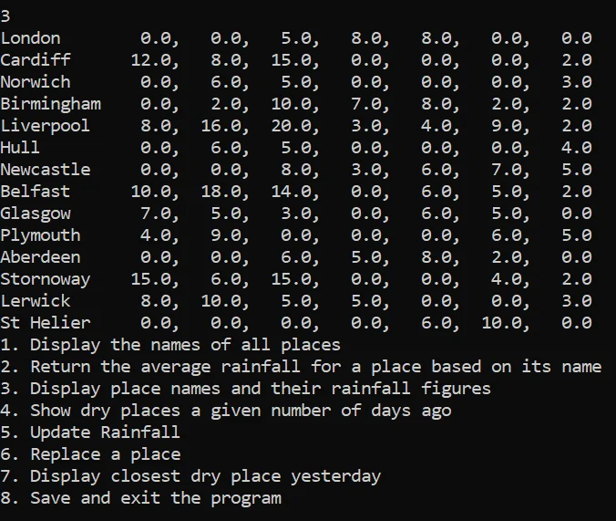
Haskell Project
A program written with the functional programming language Haskell, which is run in
the Glasgow Haskell Compiler. Contains a set of 8 tasks, displaying different data from a text
file containing locations, their longitude, latitude, and rainfall figures for different
periods.
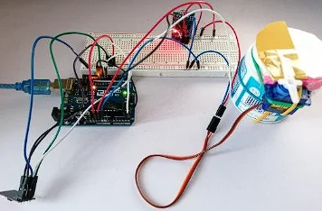
Internet of Things offline-first automatic pet feeder
IoT solution that works automatically to provide feed for pets. Comprises Arduino
Elegoo Uno, ESP8266 ESP-01, Real Time Clock RTC DS3231, and SG90 Micro-servo motor component.
The user can enter a value for the time they want their pet to be fed and the food valve opens
at the specified time.

Website Project
Project created as a part of my bachelor's degree using HTML, JavaScript and CSS.
Contains a Home page, Literature review written in my Web Programming module, Discovery log with
the applied web programming techniques and videos/pictures. The website's content can be managed
through the navigation bar, while the sidebar shows the main highlights of each page.
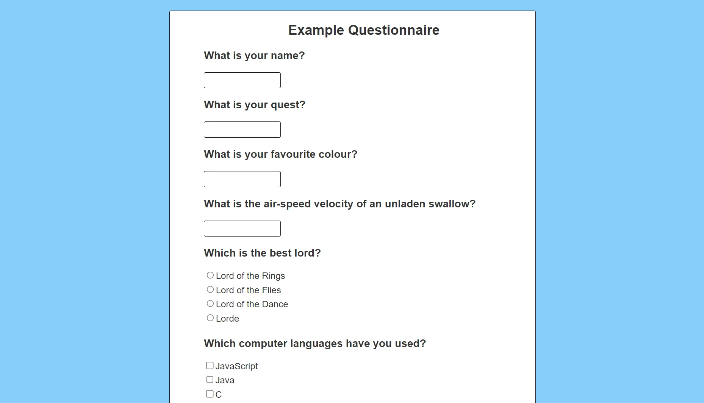
Questionnaire project
A questionnaire web project which generates questions from a JSON file and allows
the user to export their answers if they are valid. You can login with Facebook or Google on the
main page, or continue to the questionnaire, submit the answers and download them in JSON
format. Created with EJS, Node.js, HTML5, Git, JavaScript, Express.js and CSS 3.
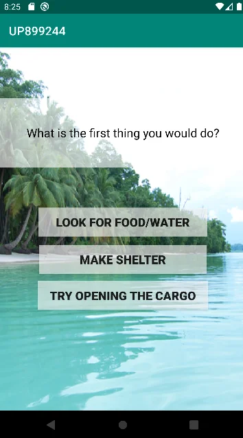
"Island Escape" Android game
Decision-based game, in which the user makes a series of choices (screenshot in the
thumbnail), leading to a different ending. Created with Android Studio Chipmunk version 2021.2.1
for Android devices with Java 11 and XML.
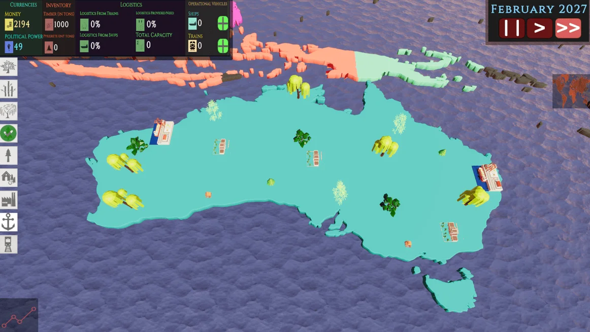
"Pykrete bergs to Antarctica" simulation game
A simulation where you play as an intergovernmental committee formed by the United
Nations to transport pykrete bergs to Antarctica’s coastline to battle global warming. The game
was developed in a team with Unity Engine, and my contribution involved 2D/3D modelling in
Blender, visual effect creation and user interface design.
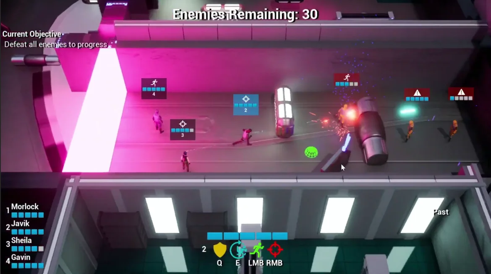
"Temporal Tenacity" Third-Person Shooter game
A game developed with Unreal Engine 5 focused on time travel, where the player
controls a squad shooting at enemies to navigate through a level. The player can send the
characters back or forward in time, taking advantage of the environmental differences. The game
was developed by a team, and my contribution was towards modelling and animating the characters.
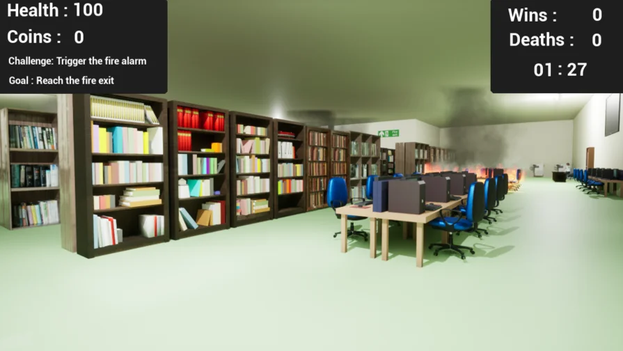
Fire safety evacuation training serious game
First-person 3D game for fire evacuation training in the UWE university library,
created with Unreal Engine 5. The game contains different levels of difficulty, AI characters
implemented using the Q learning algorithm, user interface containing a main menu/tutorial, 2D
sprites, 3D assets, sound effects, and challenges such as triggering the fire alarm for
evacuation training.
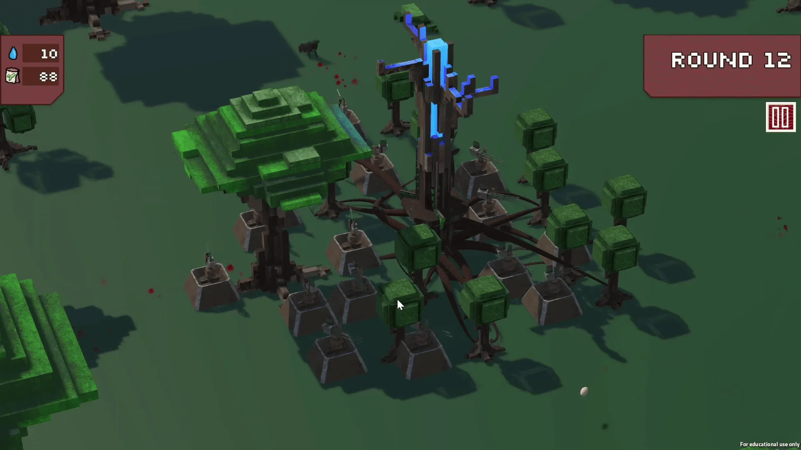
"Rooted In Defence" - Global Game Jam 2023
A tower defense game, created by a team as a part of the 2023 Global Game Jam with
Unity Engine. As the theme of the game jam was "Roots" the team decided to add an interesting
mechanic - the player can place down turrets that are rooted to the main tower in order to
defend it from evil wild rabbits. My contribution was towards visual effects and 3D modelling
with Blender.
 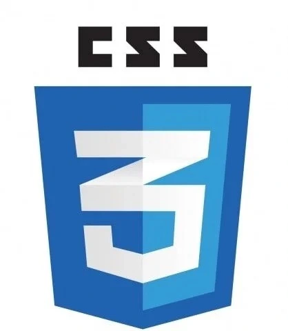
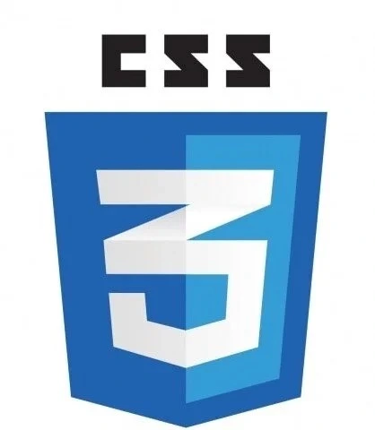